Every modelled part: pinouts, what each one simulates, and the programmer's views that open when you double-click a running chip.
Parts fall into nine categories — Power, Clock, I/O, Logic, Memory, System, Video, Storage and CPU.
Each is a real behavioural model evaluated at its pins, not a black box: the '138 decodes, the '373
latches on the level, the 8259A arbitrates priority and delivers a vector through a real INTA sequence.
Double-click a chip while the simulation runs and you get its programmer's
view: the register model as bit grids and lamps, live while running and editable while paused.
That is where you watch an interrupt mask block a request, or a timer's count race downward.
CPU
8086 — 8086 CPU (min mode) — 8086 CPU (min mode) — 40 pins, category CPU.8086 — pin detail — 8086 CPU (min mode): pin names as drawn, with overbars on active-low signals.
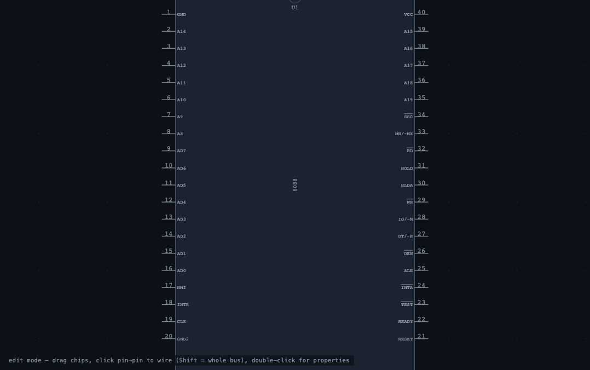
8088 — 8088 CPU (min mode) — 8088 CPU (min mode) — 40 pins, category CPU.8088 — pin detail — 8088 CPU (min mode): pin names as drawn, with overbars on active-low signals.
Pin tables
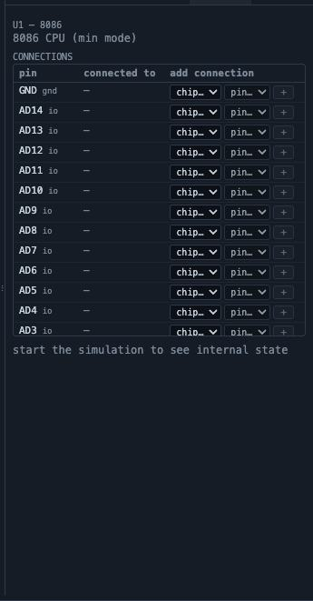
8086 — pin table — Every pin of the 8086 CPU (min mode) with its kind, what it is connected to, and a ranked dropdown of what it could connect to.
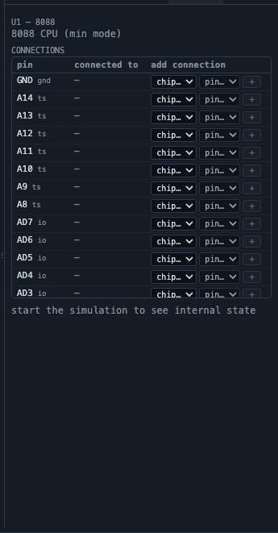
8088 — pin table — Every pin of the 8088 CPU (min mode) with its kind, what it is connected to, and a ranked dropdown of what it could connect to.
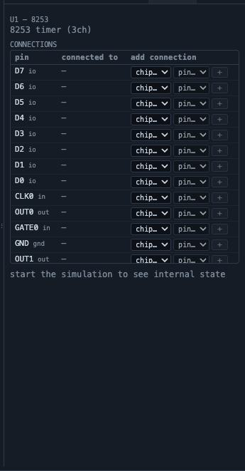
8253 — pin table — Every pin of the 8253 timer (3ch) with its kind, what it is connected to, and a ranked dropdown of what it could connect to.
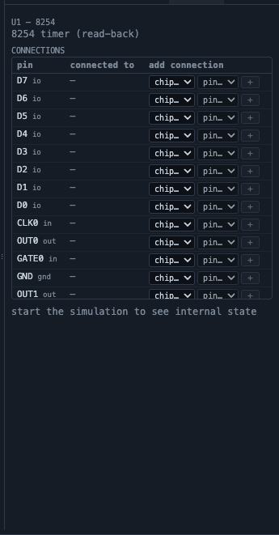
8254 — pin table — Every pin of the 8254 timer (read-back) with its kind, what it is connected to, and a ranked dropdown of what it could connect to.
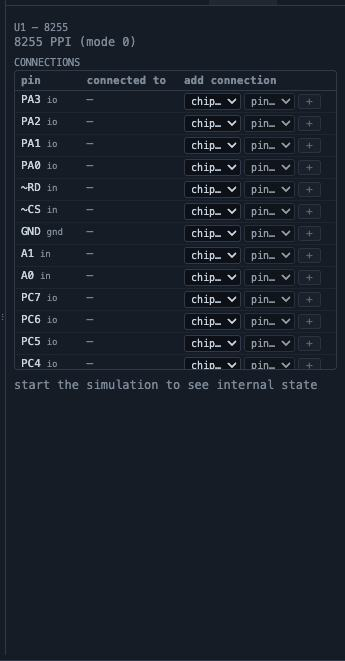
8255 — pin table — Every pin of the 8255 PPI (mode 0) with its kind, what it is connected to, and a ranked dropdown of what it could connect to.
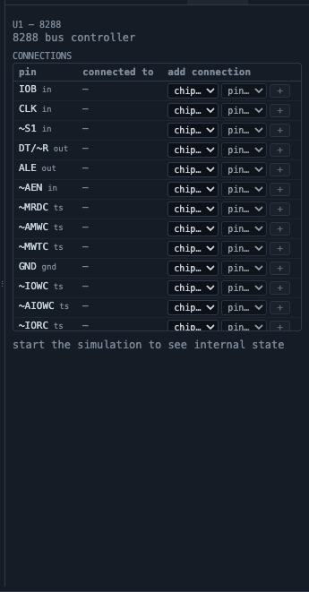
8288 — pin table — Every pin of the 8288 bus controller with its kind, what it is connected to, and a ranked dropdown of what it could connect to.
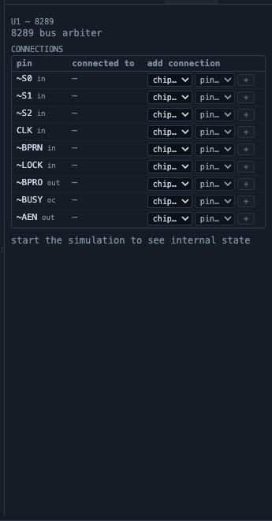
8289 — pin table — Every pin of the 8289 bus arbiter with its kind, what it is connected to, and a ranked dropdown of what it could connect to.VCC — pin table — Every pin of the VCC rail with its kind, what it is connected to, and a ranked dropdown of what it could connect to.
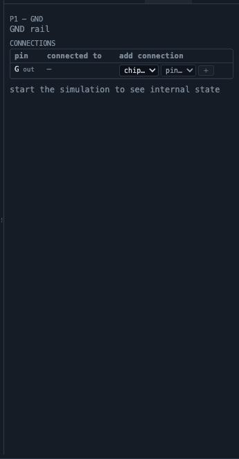
GND — pin table — Every pin of the GND rail with its kind, what it is connected to, and a ranked dropdown of what it could connect to.
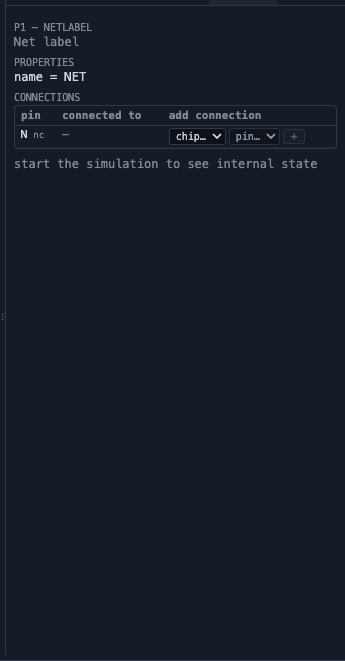
NETLABEL — pin table — Every pin of the Net label with its kind, what it is connected to, and a ranked dropdown of what it could connect to.
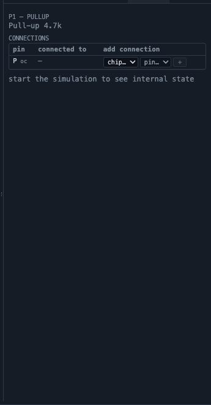
PULLUP — pin table — Every pin of the Pull-up 4.7k with its kind, what it is connected to, and a ranked dropdown of what it could connect to.
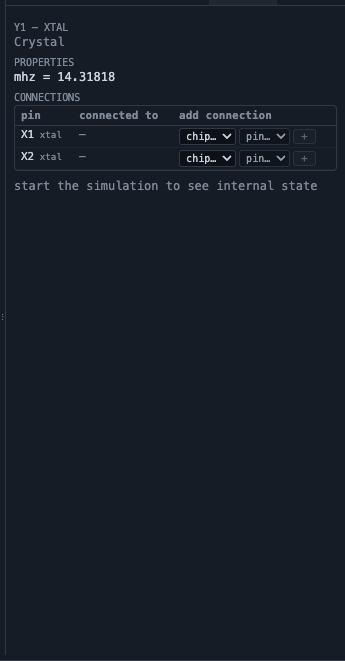
XTAL — pin table — Every pin of the Crystal with its kind, what it is connected to, and a ranked dropdown of what it could connect to.
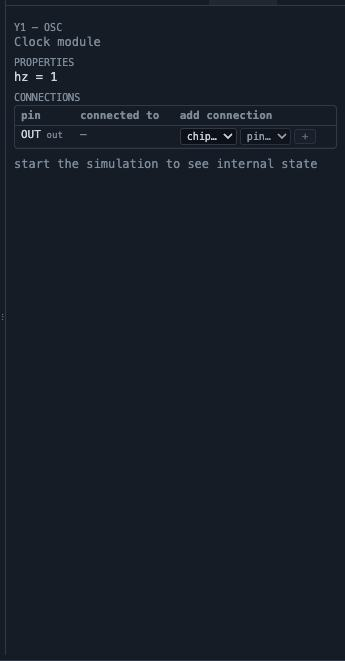
OSC — pin table — Every pin of the Clock module with its kind, what it is connected to, and a ranked dropdown of what it could connect to.
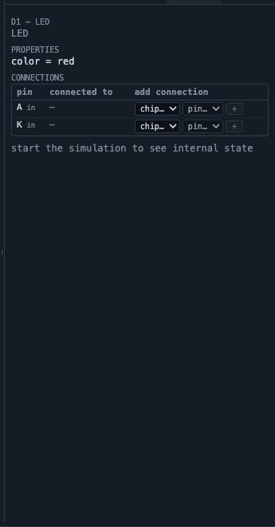
LED — pin table — Every pin of the LED with its kind, what it is connected to, and a ranked dropdown of what it could connect to.
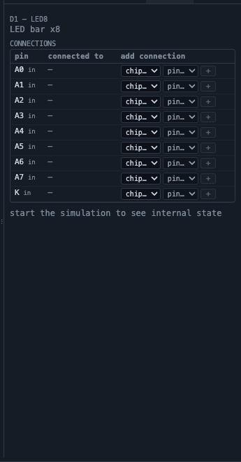
LED8 — pin table — Every pin of the LED bar x8 with its kind, what it is connected to, and a ranked dropdown of what it could connect to.
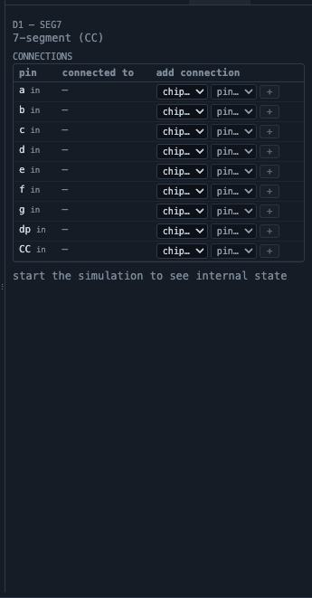
SEG7 — pin table — Every pin of the 7-segment (CC) with its kind, what it is connected to, and a ranked dropdown of what it could connect to.
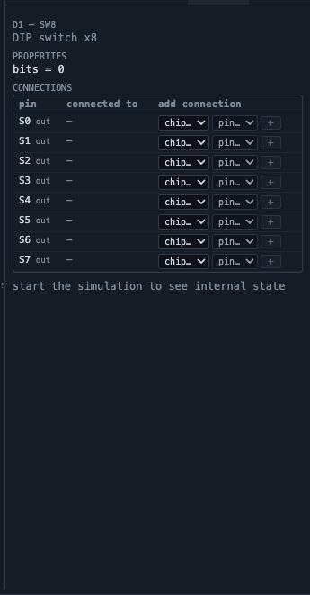
SW8 — pin table — Every pin of the DIP switch x8 with its kind, what it is connected to, and a ranked dropdown of what it could connect to.
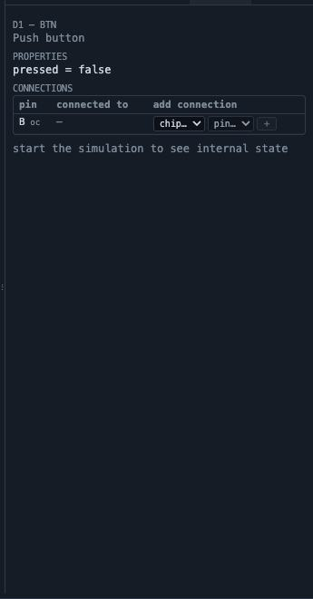
BTN — pin table — Every pin of the Push button with its kind, what it is connected to, and a ranked dropdown of what it could connect to.74LS00 — pin table — Every pin of the Quad 2-in NAND with its kind, what it is connected to, and a ranked dropdown of what it could connect to.
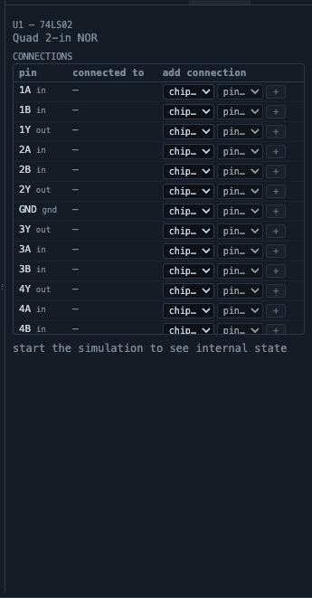
74LS02 — pin table — Every pin of the Quad 2-in NOR with its kind, what it is connected to, and a ranked dropdown of what it could connect to.74LS08 — pin table — Every pin of the Quad 2-in AND with its kind, what it is connected to, and a ranked dropdown of what it could connect to.74LS32 — pin table — Every pin of the Quad 2-in OR with its kind, what it is connected to, and a ranked dropdown of what it could connect to.74LS86 — pin table — Every pin of the Quad 2-in XOR with its kind, what it is connected to, and a ranked dropdown of what it could connect to.
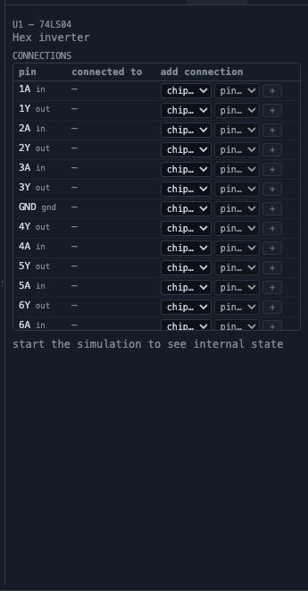
74LS04 — pin table — Every pin of the Hex inverter with its kind, what it is connected to, and a ranked dropdown of what it could connect to.
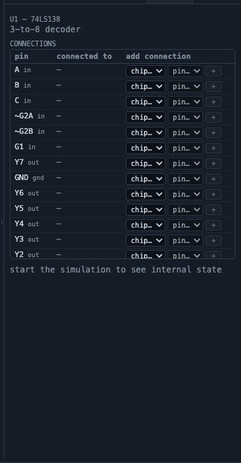
74LS138 — pin table — Every pin of the 3-to-8 decoder with its kind, what it is connected to, and a ranked dropdown of what it could connect to.
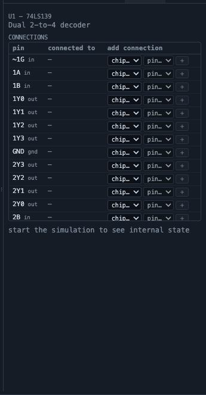
74LS139 — pin table — Every pin of the Dual 2-to-4 decoder with its kind, what it is connected to, and a ranked dropdown of what it could connect to.
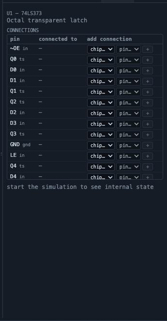
74LS373 — pin table — Every pin of the Octal transparent latch with its kind, what it is connected to, and a ranked dropdown of what it could connect to.
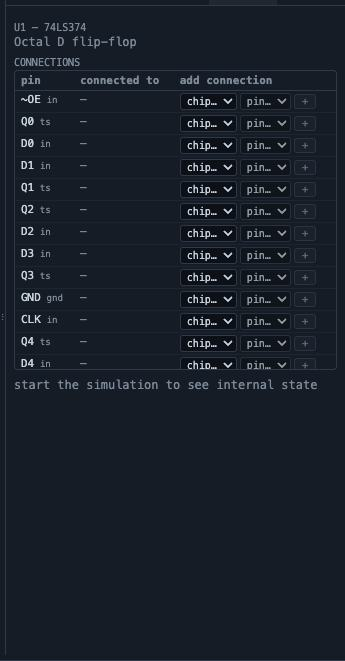
74LS374 — pin table — Every pin of the Octal D flip-flop with its kind, what it is connected to, and a ranked dropdown of what it could connect to.
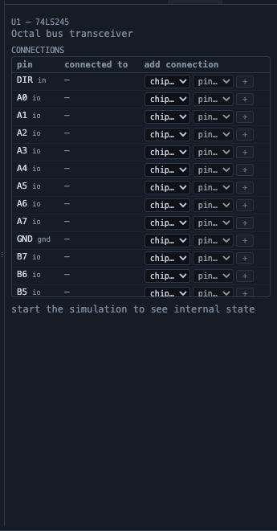
74LS245 — pin table — Every pin of the Octal bus transceiver with its kind, what it is connected to, and a ranked dropdown of what it could connect to.
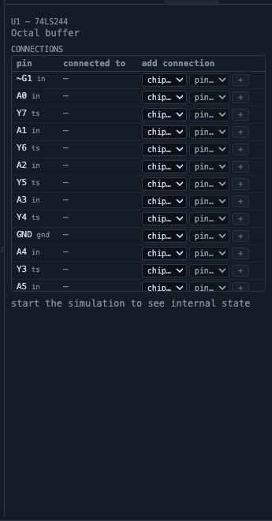
74LS244 — pin table — Every pin of the Octal buffer with its kind, what it is connected to, and a ranked dropdown of what it could connect to.
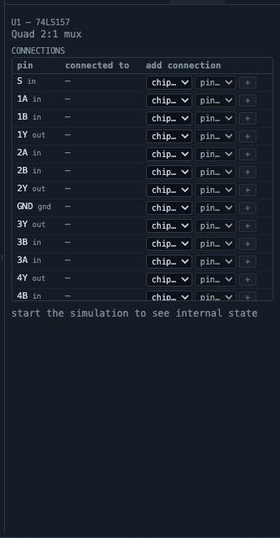
74LS157 — pin table — Every pin of the Quad 2:1 mux with its kind, what it is connected to, and a ranked dropdown of what it could connect to.
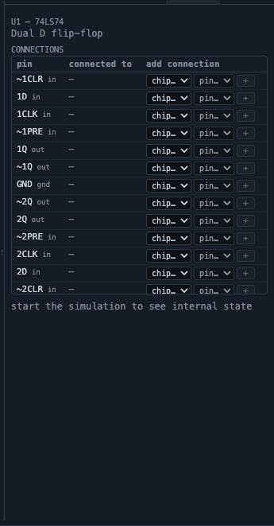
74LS74 — pin table — Every pin of the Dual D flip-flop with its kind, what it is connected to, and a ranked dropdown of what it could connect to.
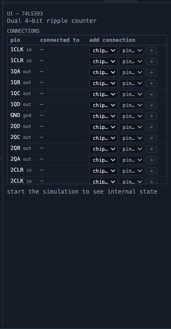
74LS393 — pin table — Every pin of the Dual 4-bit ripple counter with its kind, what it is connected to, and a ranked dropdown of what it could connect to.
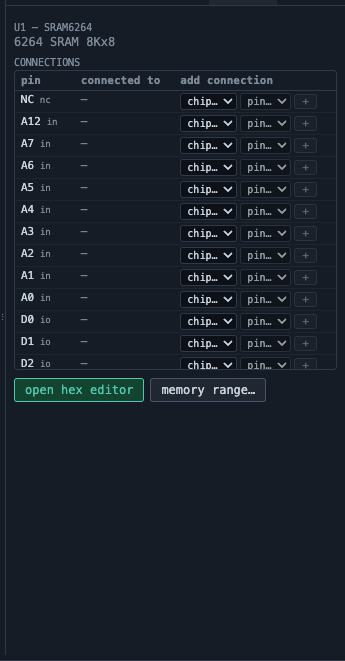
SRAM6264 — pin table — Every pin of the 6264 SRAM 8Kx8 with its kind, what it is connected to, and a ranked dropdown of what it could connect to.
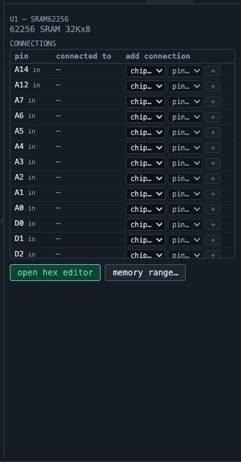
SRAM62256 — pin table — Every pin of the 62256 SRAM 32Kx8 with its kind, what it is connected to, and a ranked dropdown of what it could connect to.
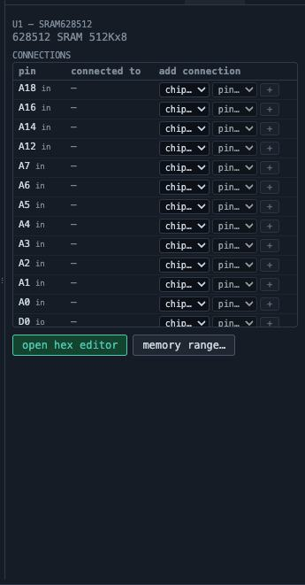
SRAM628512 — pin table — Every pin of the 628512 SRAM 512Kx8 with its kind, what it is connected to, and a ranked dropdown of what it could connect to.
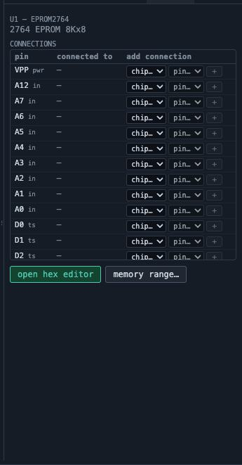
EPROM2764 — pin table — Every pin of the 2764 EPROM 8Kx8 with its kind, what it is connected to, and a ranked dropdown of what it could connect to.
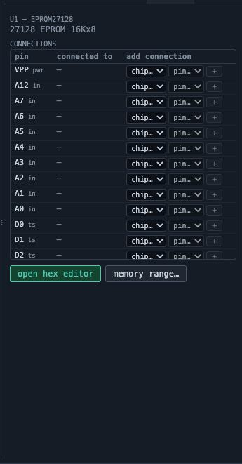
EPROM27128 — pin table — Every pin of the 27128 EPROM 16Kx8 with its kind, what it is connected to, and a ranked dropdown of what it could connect to.
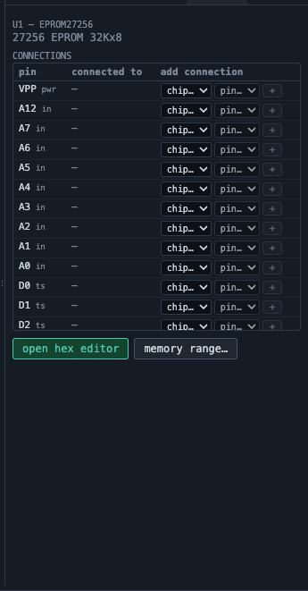
EPROM27256 — pin table — Every pin of the 27256 EPROM 32Kx8 with its kind, what it is connected to, and a ranked dropdown of what it could connect to.
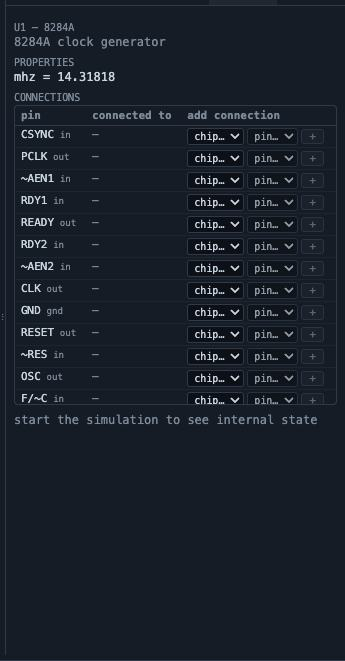
8284A — pin table — Every pin of the 8284A clock generator with its kind, what it is connected to, and a ranked dropdown of what it could connect to.
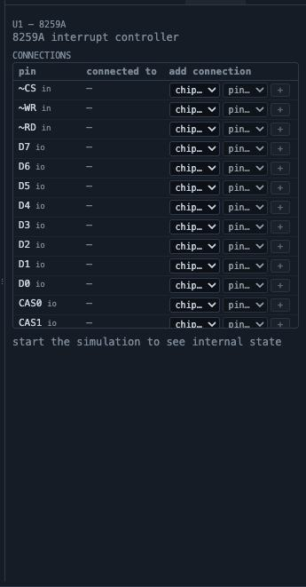
8259A — pin table — Every pin of the 8259A interrupt controller with its kind, what it is connected to, and a ranked dropdown of what it could connect to.
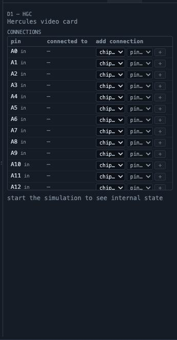
HGC — pin table — Every pin of the Hercules video card with its kind, what it is connected to, and a ranked dropdown of what it could connect to.
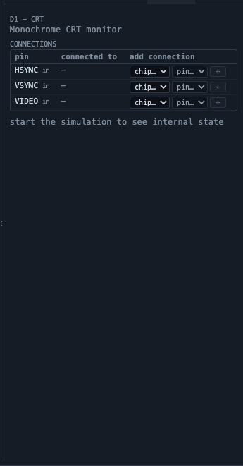
CRT — pin table — Every pin of the Monochrome CRT monitor with its kind, what it is connected to, and a ranked dropdown of what it could connect to.
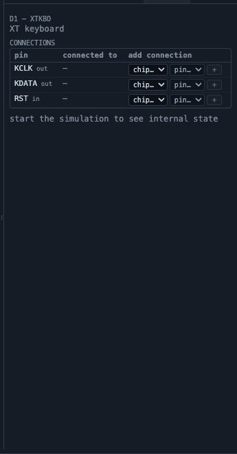
XTKBD — pin table — Every pin of the XT keyboard with its kind, what it is connected to, and a ranked dropdown of what it could connect to.
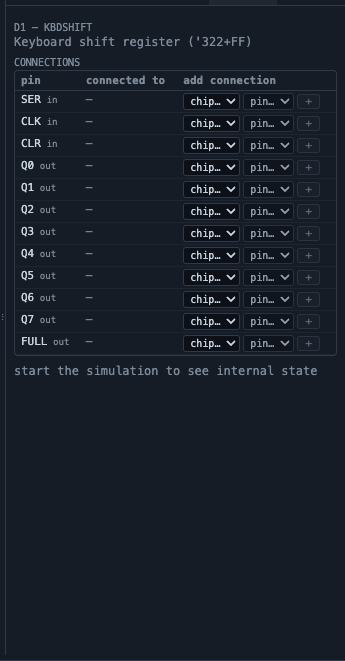
KBDSHIFT — pin table — Every pin of the Keyboard shift register ('322+FF) with its kind, what it is connected to, and a ranked dropdown of what it could connect to.
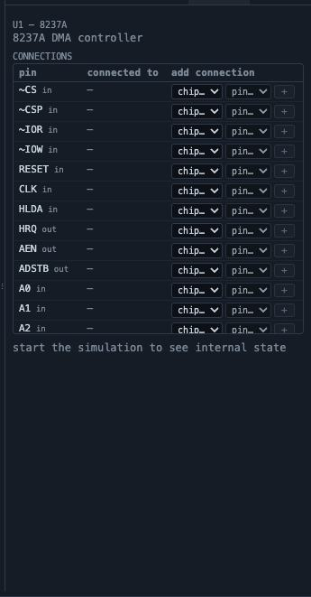
8237A — pin table — Every pin of the 8237A DMA controller with its kind, what it is connected to, and a ranked dropdown of what it could connect to.
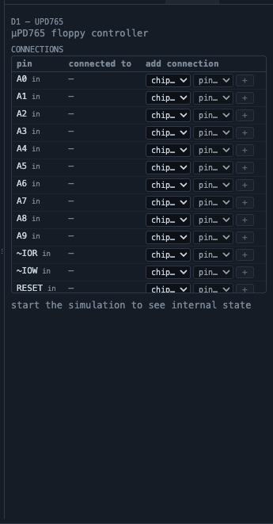
UPD765 — pin table — Every pin of the µPD765 floppy controller with its kind, what it is connected to, and a ranked dropdown of what it could connect to.
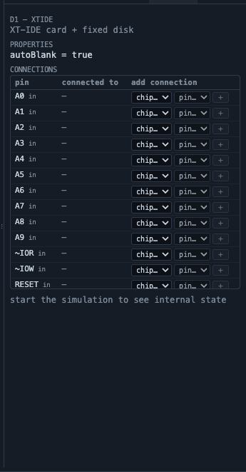
XTIDE — pin table — Every pin of the XT-IDE card + fixed disk with its kind, what it is connected to, and a ranked dropdown of what it could connect to.
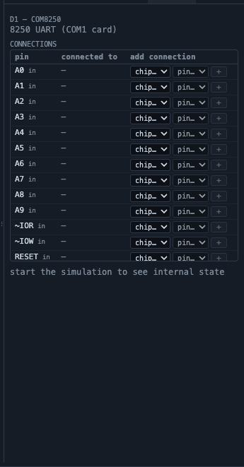
COM8250 — pin table — Every pin of the 8250 UART (COM1 card) with its kind, what it is connected to, and a ranked dropdown of what it could connect to.
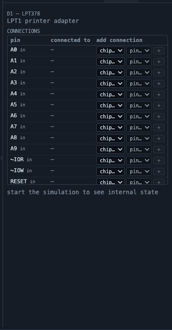
LPT378 — pin table — Every pin of the LPT1 printer adapter with its kind, what it is connected to, and a ranked dropdown of what it could connect to.
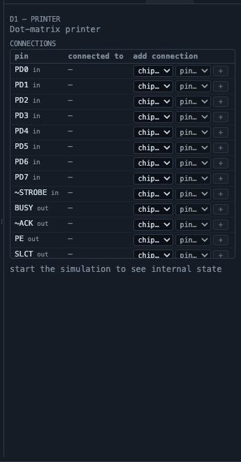
PRINTER — pin table — Every pin of the Dot-matrix printer with its kind, what it is connected to, and a ranked dropdown of what it could connect to.
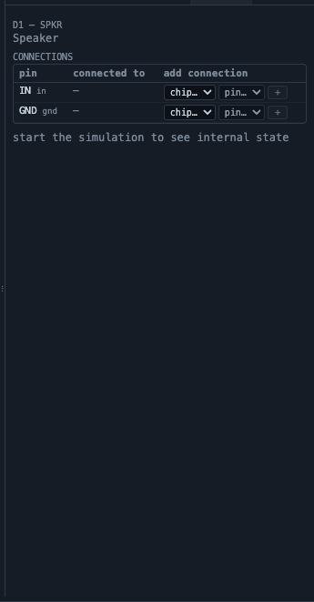
SPKR — pin table — Every pin of the Speaker with its kind, what it is connected to, and a ranked dropdown of what it could connect to.
System
8253 — 8253 timer (3ch) — 8253 timer (3ch) — 24 pins, category System. Double-click it while running for its programmer's view.8253 — pin detail — 8253 timer (3ch): pin names as drawn, with overbars on active-low signals.
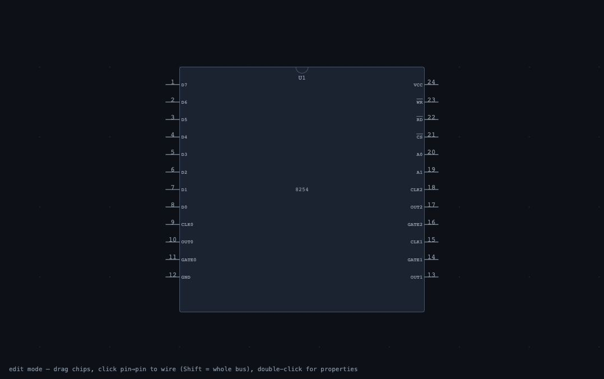
8254 — 8254 timer (read-back) — 8254 timer (read-back) — 24 pins, category System. Double-click it while running for its programmer's view.8254 — pin detail — 8254 timer (read-back): pin names as drawn, with overbars on active-low signals.
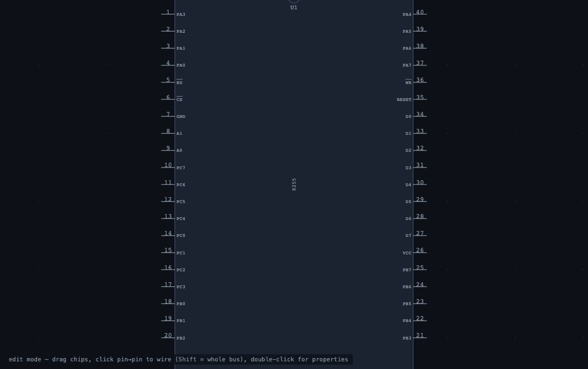
8255 — 8255 PPI (mode 0) — 8255 PPI (mode 0) — 40 pins, category System.8255 — pin detail — 8255 PPI (mode 0): pin names as drawn, with overbars on active-low signals.8288 — 8288 bus controller — 8288 bus controller — 20 pins, category System. Double-click it while running for its programmer's view.8288 — pin detail — 8288 bus controller: pin names as drawn, with overbars on active-low signals.8289 — 8289 bus arbiter — 8289 bus arbiter — 9 pins, category System. Double-click it while running for its programmer's view.8289 — pin detail — 8289 bus arbiter: pin names as drawn, with overbars on active-low signals.8284A — 8284A clock generator — 8284A clock generator — 18 pins, category System.8284A — pin detail — 8284A clock generator: pin names as drawn, with overbars on active-low signals.8259A — 8259A interrupt controller — 8259A interrupt controller — 28 pins, category System.8259A — pin detail — 8259A interrupt controller: pin names as drawn, with overbars on active-low signals.8237A — 8237A DMA controller — 8237A DMA controller — 32 pins, category System. Double-click it while running for its programmer's view.8237A — pin detail — 8237A DMA controller: pin names as drawn, with overbars on active-low signals.
Power
VCC — VCC rail — VCC rail — 1 pins, category Power.VCC — pin detail — VCC rail: pin names as drawn, with overbars on active-low signals.GND — GND rail — GND rail — 1 pins, category Power.GND — pin detail — GND rail: pin names as drawn, with overbars on active-low signals.NETLABEL — Net label — Net label — 1 pins, category Power.NETLABEL — pin detail — Net label: pin names as drawn, with overbars on active-low signals.PULLUP — Pull-up 4.7k — Pull-up 4.7k — 1 pins, category Power.PULLUP — pin detail — Pull-up 4.7k: pin names as drawn, with overbars on active-low signals.
Clock
XTAL — Crystal — Crystal — 2 pins, category Clock.XTAL — pin detail — Crystal: pin names as drawn, with overbars on active-low signals.OSC — Clock module — Clock module — 1 pins, category Clock.OSC — pin detail — Clock module: pin names as drawn, with overbars on active-low signals.
I/O
LED — LED — LED — 2 pins, category I/O.LED — pin detail — LED: pin names as drawn, with overbars on active-low signals.LED8 — LED bar x8 — LED bar x8 — 9 pins, category I/O.LED8 — pin detail — LED bar x8: pin names as drawn, with overbars on active-low signals.SEG7 — 7-segment (CC) — 7-segment (CC) — 9 pins, category I/O.SEG7 — pin detail — 7-segment (CC): pin names as drawn, with overbars on active-low signals.SW8 — DIP switch x8 — DIP switch x8 — 8 pins, category I/O.SW8 — pin detail — DIP switch x8: pin names as drawn, with overbars on active-low signals.BTN — Push button — Push button — 1 pins, category I/O.BTN — pin detail — Push button: pin names as drawn, with overbars on active-low signals.XTKBD — XT keyboard — XT keyboard — 3 pins, category I/O. Double-click it while running for its programmer's view.XTKBD — pin detail — XT keyboard: pin names as drawn, with overbars on active-low signals.KBDSHIFT — Keyboard shift register ('322+FF) — Keyboard shift register ('322+FF) — 12 pins, category I/O. Double-click it while running for its programmer's view.KBDSHIFT — pin detail — Keyboard shift register ('322+FF): pin names as drawn, with overbars on active-low signals.COM8250 — 8250 UART (COM1 card) — 8250 UART (COM1 card) — 24 pins, category I/O. Double-click it while running for its programmer's view.COM8250 — pin detail — 8250 UART (COM1 card): pin names as drawn, with overbars on active-low signals.LPT378 — LPT1 printer adapter — LPT1 printer adapter — 39 pins, category I/O. Double-click it while running for its programmer's view.LPT378 — pin detail — LPT1 printer adapter: pin names as drawn, with overbars on active-low signals.PRINTER — Dot-matrix printer — Dot-matrix printer — 14 pins, category I/O. Double-click it while running for its programmer's view.PRINTER — pin detail — Dot-matrix printer: pin names as drawn, with overbars on active-low signals.SPKR — Speaker — Speaker — 2 pins, category I/O. Double-click it while running for its programmer's view.SPKR — pin detail — Speaker: pin names as drawn, with overbars on active-low signals.
Logic
74LS00 — Quad 2-in NAND — Quad 2-in NAND — 14 pins, category Logic.74LS00 — pin detail — Quad 2-in NAND: pin names as drawn, with overbars on active-low signals.74LS02 — Quad 2-in NOR — Quad 2-in NOR — 14 pins, category Logic.74LS02 — pin detail — Quad 2-in NOR: pin names as drawn, with overbars on active-low signals.74LS08 — Quad 2-in AND — Quad 2-in AND — 14 pins, category Logic.74LS08 — pin detail — Quad 2-in AND: pin names as drawn, with overbars on active-low signals.74LS32 — Quad 2-in OR — Quad 2-in OR — 14 pins, category Logic.74LS32 — pin detail — Quad 2-in OR: pin names as drawn, with overbars on active-low signals.74LS86 — Quad 2-in XOR — Quad 2-in XOR — 14 pins, category Logic.74LS86 — pin detail — Quad 2-in XOR: pin names as drawn, with overbars on active-low signals.74LS04 — Hex inverter — Hex inverter — 14 pins, category Logic.74LS04 — pin detail — Hex inverter: pin names as drawn, with overbars on active-low signals.74LS138 — 3-to-8 decoder — 3-to-8 decoder — 16 pins, category Logic.74LS138 — pin detail — 3-to-8 decoder: pin names as drawn, with overbars on active-low signals.74LS139 — Dual 2-to-4 decoder — Dual 2-to-4 decoder — 16 pins, category Logic.74LS139 — pin detail — Dual 2-to-4 decoder: pin names as drawn, with overbars on active-low signals.74LS373 — Octal transparent latch — Octal transparent latch — 20 pins, category Logic.74LS373 — pin detail — Octal transparent latch: pin names as drawn, with overbars on active-low signals.74LS374 — Octal D flip-flop — Octal D flip-flop — 20 pins, category Logic.74LS374 — pin detail — Octal D flip-flop: pin names as drawn, with overbars on active-low signals.74LS245 — Octal bus transceiver — Octal bus transceiver — 20 pins, category Logic.74LS245 — pin detail — Octal bus transceiver: pin names as drawn, with overbars on active-low signals.74LS244 — Octal buffer — Octal buffer — 20 pins, category Logic.74LS244 — pin detail — Octal buffer: pin names as drawn, with overbars on active-low signals.74LS157 — Quad 2:1 mux — Quad 2:1 mux — 16 pins, category Logic.74LS157 — pin detail — Quad 2:1 mux: pin names as drawn, with overbars on active-low signals.74LS74 — Dual D flip-flop — Dual D flip-flop — 14 pins, category Logic.74LS74 — pin detail — Dual D flip-flop: pin names as drawn, with overbars on active-low signals.74LS393 — Dual 4-bit ripple counter — Dual 4-bit ripple counter — 14 pins, category Logic.74LS393 — pin detail — Dual 4-bit ripple counter: pin names as drawn, with overbars on active-low signals.
Memory
SRAM6264 — 6264 SRAM 8Kx8 — 6264 SRAM 8Kx8 — 28 pins, category Memory. Has a memory image the analyzer can probe.SRAM6264 — pin detail — 6264 SRAM 8Kx8: pin names as drawn, with overbars on active-low signals.SRAM62256 — 62256 SRAM 32Kx8 — 62256 SRAM 32Kx8 — 28 pins, category Memory. Has a memory image the analyzer can probe.SRAM62256 — pin detail — 62256 SRAM 32Kx8: pin names as drawn, with overbars on active-low signals.SRAM628512 — 628512 SRAM 512Kx8 — 628512 SRAM 512Kx8 — 32 pins, category Memory. Has a memory image the analyzer can probe.SRAM628512 — pin detail — 628512 SRAM 512Kx8: pin names as drawn, with overbars on active-low signals.EPROM2764 — 2764 EPROM 8Kx8 — 2764 EPROM 8Kx8 — 28 pins, category Memory. Has a memory image the analyzer can probe.EPROM2764 — pin detail — 2764 EPROM 8Kx8: pin names as drawn, with overbars on active-low signals.EPROM27128 — 27128 EPROM 16Kx8 — 27128 EPROM 16Kx8 — 28 pins, category Memory. Has a memory image the analyzer can probe.EPROM27128 — pin detail — 27128 EPROM 16Kx8: pin names as drawn, with overbars on active-low signals.EPROM27256 — 27256 EPROM 32Kx8 — 27256 EPROM 32Kx8 — 28 pins, category Memory. Has a memory image the analyzer can probe.EPROM27256 — pin detail — 27256 EPROM 32Kx8: pin names as drawn, with overbars on active-low signals.
Video
HGC — Hercules video card — Hercules video card — 35 pins, category Video. Has a memory image the analyzer can probe. Double-click it while running for its programmer's view.HGC — pin detail — Hercules video card: pin names as drawn, with overbars on active-low signals.CRT — Monochrome CRT monitor — Monochrome CRT monitor — 3 pins, category Video.CRT — pin detail — Monochrome CRT monitor: pin names as drawn, with overbars on active-low signals.
Storage
UPD765 — µPD765 floppy controller — µPD765 floppy controller — 23 pins, category Storage. Double-click it while running for its programmer's view.UPD765 — pin detail — µPD765 floppy controller: pin names as drawn, with overbars on active-low signals.XTIDE — XT-IDE card + fixed disk — XT-IDE card + fixed disk — 21 pins, category Storage. Double-click it while running for its programmer's view.XTIDE — pin detail — XT-IDE card + fixed disk: pin names as drawn, with overbars on active-low signals.
Programmer's views
These dialogs are the chip's software interface made visible. Every field is
the real state the simulation is using — set a bit here while paused and the machine behaves
differently when you resume.
Interrupt controller — 8259A — IMR, IRR and ISR as bit grids with an INT lamp: watch a request arrive, get masked, or go into service.Programmable interval timer — 8253 — All three counters with mode, reload and live count — plus OUT and GATE lamps.Parallel peripheral interface — 8255 — The control word decoded into port directions, and all three port latches.DMA controller — 8237A — Channel addresses and counts, the mask register, and port 80h — where POST codes appear.Floppy disk controller — UPD765 — Motor and IRQ lamps, the diskette in the bay, and a running count of sectors read and written.Hercules video card — HGC — Mode and configuration registers, the CRTC index, the current scanline and the frame counter.XT-IDE fixed disk — XTIDE — Drive status, geometry, and the C/H/S registers as the BIOS sets them.Serial UART — COM8250 — Baud divisor, IER, LCR and the receive queue — with a button that opens a live terminal.Octal latch — 74LS373 — Even the glue has a view: the latched byte, plus LE and ~OE lamps.Speaker — SPKR — The measured frequency of whatever is driving the cone, a log of recent tones, and a button to actually listen.XT keyboard — XTKBD — The scancode queue, the bit being shifted out, and a running total of codes sent.Speaker (music board) — SPKR — On the music board the frequency readout follows the notes the program plays.Dot-matrix printer — PRINTER — The paper: everything the program has printed, with a tear-off button.DIP switches — SW8 — The one view that stays editable while running — flip a switch and the program sees it immediately.Bus arbiter — 8289 — Whether this processor holds the bus, and how many grants it has won.
Per-chip dialogs
Double-click a chip while editing instead and you get its properties,
including the tabular wiring view: every pin with a dropdown of plausible targets, ranked by how
likely each is for that specific pin. You can wire an entire chip without touching the canvas.
Chip properties — Double-click a chip while editing to reach its configuration and its tabular wiring.Crystal frequency — Properties are per-part: a crystal carries its frequency, a DIP switch its bit pattern, an LED its colour.Tabular wiring — Every pin with a dropdown of targets, ranked by how likely each is for that specific pin — sibling evidence, signal families and proximity all count. You can wire a whole chip without touching the canvas.The Chip panel — The same connection table lives in the Chip panel, alongside the part's properties and — while running — its internal state and live pin values.